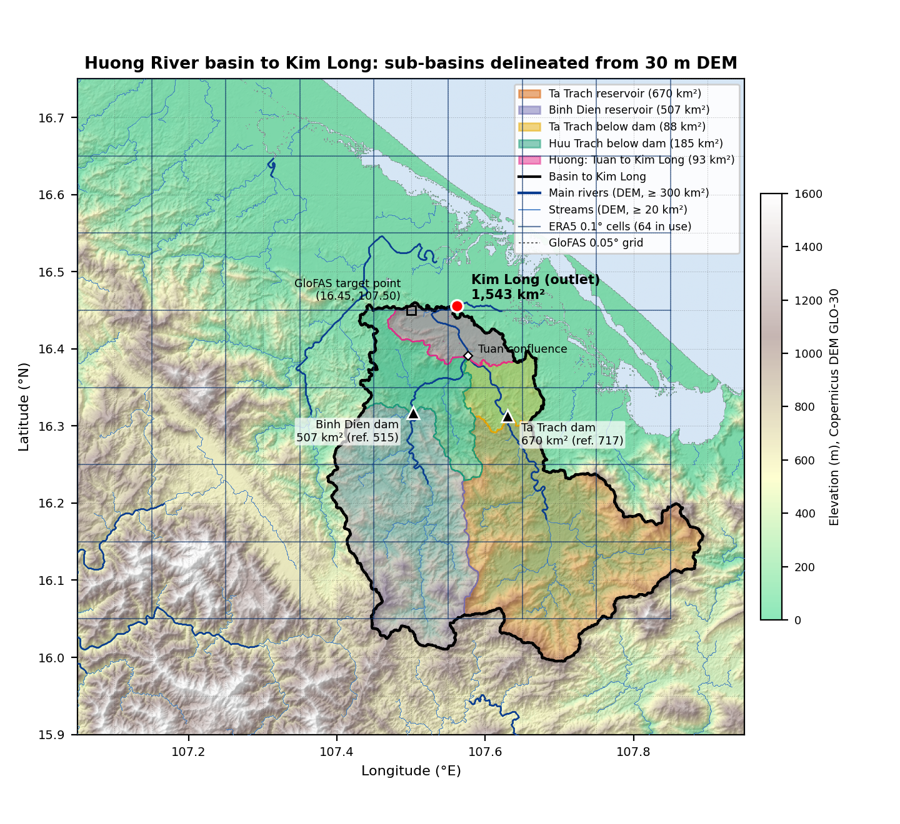
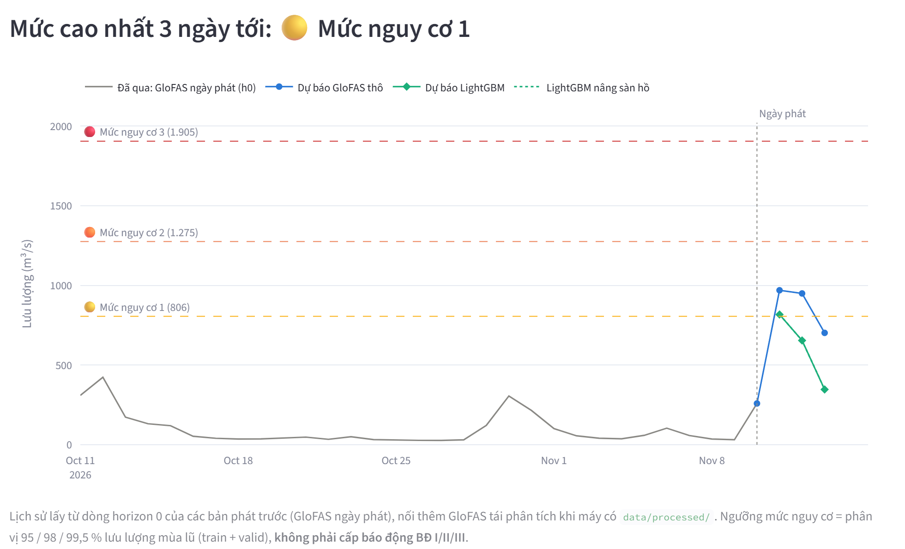
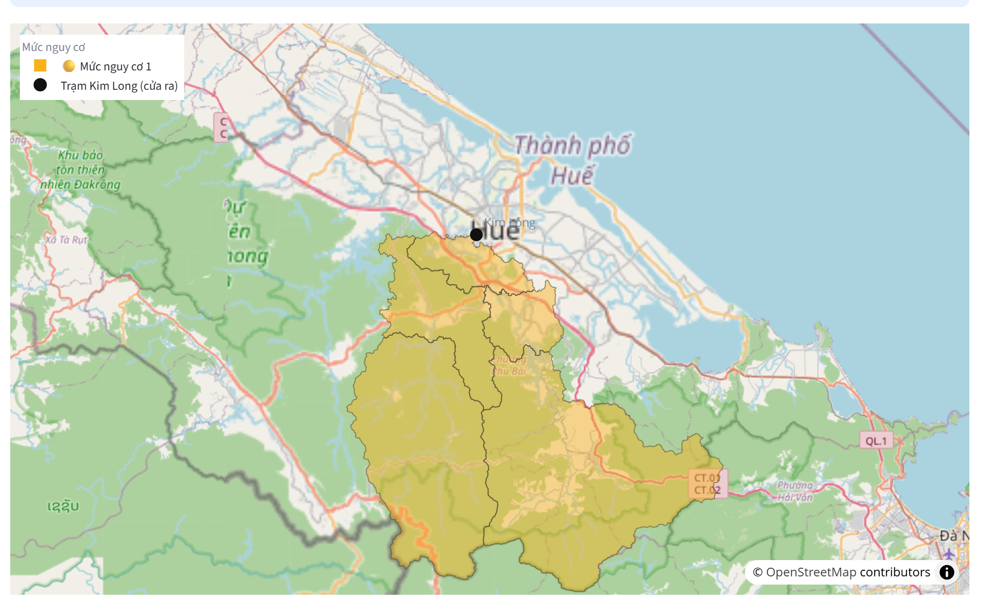

DSP391m · Bảo vệ cuối kỳ · FPT University · Fall 2026
Dự báo lưu lượng và mức nguy cơ lũ sông Hương tại Kim Long, 1–3 ngày tới
Một lớp hiệu chỉnh cục bộ trên GloFAS — dữ liệu mở, ~107.5 triệu bản ghi giờ, chạy tự động mỗi sáng
Đặng Nguyên Giáp
Tech Lead
Bài toán · dữ liệu · Spark · hệ thống vận hành
Hồ Anh Đức
Data Analyst
Mô hình · đánh giá · cảnh báo · SHAP
Mai Thị Lệ Huyền
Research & Docs
DL · thử giảm cắt ngọn · hạn chế · kết luận
5.05 m
mực nước Kim Long ngày 27/10/2025 — cao hơn báo động III 1.55 m (theo tin báo)
5–6 giờ
để mưa trên núi về tới Huế: lưu vực ngắn và dốc
1–3 ngày
báo trước là thời gian để dân kê đồ, neo thuyền, sơ tán
CÂU HỎI CỦA ĐỒ ÁN
Lưu lượng tại Kim Long 1, 2, 3 ngày tới là bao nhiêu — và có vượt mức nguy cơ không?
DSP391m · Final
Đặng Nguyên Giáp
→
→
Không thay GloFAS. Không có số đo KTTV ⇒ mục tiêu là lưu lượng GloFAS v4 theo ngày tại ô (16.45 N, 107.50 E). Mức nguy cơ là phân vị mùa lũ, không phải BĐ I/II/III.
DSP391m · Final
Đặng Nguyên Giáp

1,543 km²
lưu vực tới Kim Long, cắt từ DEM 30 m — đính chính con số 2,830 km² cũ (gồm cả sông Bồ 938 km²)
5 lưu vực con
Tả Trạch 670 · Bình Điền 507 · dưới đập 88 + 185 · Tuần–Kim Long 93 km²
646 + 424 triệu m³
dung tích hồ Tả Trạch và Bình Điền — GloFAS không mô phỏng hai hồ này
6,087 ngày
EDA: Q trung vị 49.7, cực đại 3,588 m³/s (08/11/2011); tháng 9–12 = 58.6 % dòng chảy năm
DSP391m · Final
Đặng Nguyên Giáp
ERA5 · reanalysis · giờ · 64 ô
6.5 triệu
IMERG · NASA · 30 phút · 100 ô
50.5 triệu
GSMaP-GC · JAXA · giờ · 100 ô
25.2 triệu
GSMaP_NRT · JAXA · giờ · 100 ô
25.2 triệu
Tổng ≈ 107.5 triệu bản ghi giờ · 1998–2026 · Parquet chia theo nguồn / năm / tháng
Thêm: ERA5-Land (độ ẩm đất) · IBTrACS 417 cơn bão · không khí lạnh · ENSO (ONI trễ 3 tháng) · tin xả hồ
DSP391m · Final
Đặng Nguyên Giáp
1
Tác vụ độc lập, bỏ qua file đã có, khoá chống chạy song song
→
2
Parquet theo nguồn / năm / tháng, giờ Việt Nam
→
3
Giờ → ngày → 5 lưu vực con; 54 đặc trưng mưa giờ (Polars; cùng logic trên Spark)
→
4
LightGBM E, walk-forward 13 năm, bootstrap + Wilcoxon
→
5
Job 05:00 mỗi sáng → nhật ký CSV → dashboard
Mỗi bước tự kiểm được: tổng nhãn 00–23 h trùng mưa ngày (lệch ≤ 1.7e-13 mm, dời ±1 h lệch 27.5–47.5 mm) · cắt dữ liệu ở 3 mốc rồi tính lại: ngày trước mốc không đổi · Spark = Polars từng bit.
DSP391m · Final
Đặng Nguyên Giáp
101.0 triệu
dòng giờ vệ tinh (IMERG + GSMaP-GC + GSMaP_NRT, 125 MB) xử lý trên cụm Spark
0 khác biệt
6,246,870 giá trị (54 cột đặc trưng giờ): Spark = Polars từng bit
0
10
20
30
40
50
giây (trung vị các lần chạy, cùng container)
IMERG
16.3
29.8
42.6
GSMaP-GC
5.1
24.1
31.6
GSMaP_NRT
4.7
23.3
30.9
Polars nhanh hơn Spark 1.8 / 4.7 / 5.0 lần; 2 worker không nhanh hơn 1. Dữ liệu vừa RAM một máy, cụm chạy trên một máy vật lý — Spark chứng minh tính đúng.
DSP391m · Final
Đặng Nguyên Giáp
Nối tiếp (tổng thời gian 141 tác vụ)
2,081 s
Pool 8 tiến trình, một máy
330 s
Spark cụm 2 worker × 4 lõi = 8 lõi
271 s
7.7×
nhanh hơn nối tiếp trên 8 lõi — mỗi lượt (cấu hình × năm × seed) độc lập, ~15 s CPU
2.3e-13
lệch lớn nhất giữa dự báo trên cụm và local — 141 lượt, 154,494 giá trị
DSP391m · Final
Đặng Nguyên Giáp
GitHub Actions (cron 20:00 UTC)
→
GloFAS phát báo + thời tiết dự báo, ~130 ngày gần nhất
→
dựng bằng cùng mã với panel lịch sử
→
đóng băng · 3 seed × 3 horizon · nâng sàn khi hồ xả
→
isotonic trên 9,862 ngày OOF · báo khi ≥ 0.091 = 1/11
→
reports/forecast_log/ · commit · dashboard đọc
DSP391m · Final
Đặng Nguyên Giáp


Dự báo
30 ngày qua + 1–3 ngày tới: GloFAS thô, LightGBM, sàn hồ; 3 mức nguy cơ
Bản đồ lưu vực
5 lưu vực con tô theo mức của ngày chọn — một mức chung toàn lưu vực
Giải thích & hạn chế
SHAP theo nhóm, NSE test / walk-forward / persistence, các hạn chế
dsp391m-huong-flood.streamlit.app · tự cập nhật khi job commit · sản phẩm học thuật, không phải bản tin cảnh báo chính thức
DSP391m · Final
Đặng Nguyên Giáp
A
Report 2: lưu lượng trễ, mưa ERA5, mùa (66 cột)
B
+ mưa từ 1997: train 4,550 → 9,298 ngày
C
+ độ ẩm đất ERA5-Land (70 cột)
D
+ đại diện mực nước hồ (73 cột)
E
+ bão, không khí lạnh, ENSO (88 cột)
Mọi lựa chọn (cấu hình, hàm mất mát, ngưỡng) chọn bằng valid / walk-forward — không nhìn test.
DSP391m · Final
Hồ Anh Đức
Vì sao L2 ở h2–h3: ΔNSE (L2 − L1), walk-forward 13 năm
0
+0.01
+0.02
+0.03
+0.04
+0.05
+0.018
p 0.22
h1
+0.039
p 0.003
h2
+0.036
p 0.002
h3
Chỉ đổi sang L2 ở horizon có cải thiện ý nghĩa — h1 giữ L1.
DSP391m · Final
Hồ Anh Đức
−0.2
0.0
0.2
0.4
0.6
0.8
NSE test
1 ngày
Đạt
2 ngày
Đạt
3 ngày
Trượt 0.014
0.542
0.747
0.008
0.499
−0.198
0.236
h1: RMSE thấp hơn persistence 25.6 % (AC-1 cần ≥ 20 %).
Khí hậu 0.097 · ARIMA −0.093 · seasonal naive −0.434.
DSP391m · Final
Hồ Anh Đức
−0.50
0.00
0.50
1.00
2013
2015
2017
2019
2021
2023
2025
Trung bình 13 năm
E: 0.761 / 0.437 / 0.206
Persistence: 0.536 / −0.084 / −0.361
E h1 hơn persistence 12/13 năm (trừ 2019); h2, h3 hơn cả 13 năm
DSP391m · Final
Hồ Anh Đức
0.745
A
0.766
B
0.757
C
0.756
D
0.747
E
h1 · trục từ 0.60
B: +0.021 (mưa từ 1997)
0.432
A
0.447
B
0.454
C
0.461
D
0.499
E
h2 · trục từ 0.40
E: +0.038 so với D
0.166
A
0.192
B
0.208
C
0.199
D
0.236
E
h3 · trục từ 0.14
E: +0.037 so với D
Hệ thống thời tiết báo trước mưa trước khi mưa rơi ⇒ giúp đúng h2–h3. Độ ẩm đất (C), đại diện hồ (D): không thêm gì rõ. Trung bình 3 seed, sd 0.012.
DSP391m · Final
Hồ Anh Đức
Mức nguy cơ = phân vị 95 / 98 / 99.5 % lưu lượng mùa lũ = 806 / 1,275 / 1,905 m³/s — không phải BĐ I/II/III (quan hệ H–Q chỉ R² 0.18 trên 12 đợt, chệch −1.94 m).
| Quy tắc báo mức 1 (h1, 13 fold) | Ngưỡng | Bỏ sót | Báo nhầm/năm | Chi phí 10:1 |
|---|
| p ≥ 0.5 (mặc định) | 0.5 | 32 | 3.1 | 360 |
| Ngưỡng chi phí, xác suất thô | 0.03 | 13 | 8.4 | 239 |
| Isotonic + ngưỡng Bayes 1/11 | 0.091 | 12 | 8.5 | 230 |
Chi phí: một lần bỏ sót = 10 lần báo nhầm. p = 0.5 → ngưỡng chi phí: −34 %, p 0.042.
0.0119 → 0.0100
Brier (p 0.027, tốt hơn 9/13 fold) · ECE 0.010 → 0.002
Chi phí không đổi (239 → 230, p 0.75) vì isotonic giữ thứ hạng. Cái được: xác suất có nghĩa, ngưỡng tối ưu 0.12 ≈ 1/11 = 0.091 ⇒ job dùng thẳng 1/11.
DSP391m · Final
Hồ Anh Đức
0
10
20
30
40
số đợt lũ bắt được / 43 đợt (walk-forward)
1 ngày
27/43
28/43
2 ngày
14/43
10/43
3 ngày
7/43
0/43
15 đợt
được báo trước ngày lũ bắt đầu — persistence không bao giờ làm được
0.80 / 0.54 / 0.31
tỉ số đỉnh dự báo / đỉnh thật (trung vị) — cắt ngọn tăng theo horizon
1 và 0
đợt báo nhầm ở h2, h3 (persistence: 16 và 29)
DSP391m · Final
Hồ Anh Đức
h1
58.4 %
35.5 %
h2
26.3 %
41.6 %
19.2 %
7.2 %
5.6 %
h3
22.8 %
30.3 %
26.6 %
15.6 %
Hợp thuỷ văn: càng xa, trí nhớ sông giảm, thời tiết tăng (khí áp/gió 2.3 → 16.3 %). Chưa hợp lý, ghi thẳng: độ ẩm đất tác động ngược chiều (trùng thông tin với Q hôm nay); h3 dựa 15.6 % vào lịch. Đỉnh 10/2022: GloFAS 1,967, dự báo 862 — chỉ 12/9,283 ngày train cao như vậy.
DSP391m · Final
Hồ Anh Đức
−0.4
−0.3
−0.2
−0.1
0
+0.1
ΔNSE so với LightGBM, walk-forward 13 năm (CI 95 % bootstrap theo fold)
h1
h2
h3
Thua rõ ở h3
LSTM nhấn đỉnh −0.229, p 0.033
Kém ổn định
độ lệch giữa seed: DL 0.03–0.20 · LightGBM 0.01
Hơn ở h1 theo sự kiện
CSI mức 1: DL 0.49 · LightGBM 0.44
Phân tán không giúp
DDP 2 rank cùng NSE, chậm hơn 1 tiến trình · MLlib trên dữ liệu đầy đủ, 13 fold: kém E cả 3 horizon (h1 −0.044 / −0.049, p < 0.05)
DSP391m · Final
Mai Thị Lệ Huyền
GSMaP-GC, có mưa của chính ngày t (nhìn lại)
[+0.008; +0.028] · p 0.008
+0.018
GSMaP-GC trễ 1 ngày (thực tế: trễ ~27 h)
[−0.007; +0.005] · p 0.84
−0.001
ΔNSE h3 so với E, 13 fold
GSMaP_NRT (trễ ~4.7 h, sản phẩm khác, học lại bằng lịch sử NRT): giúp mô hình yếu A (+0.009 / +0.019 / +0.012, p ≤ 0.008) nhưng không giúp E (−0.002 / +0.003 / −0.001).
⇒ Không đưa mưa vệ tinh vào job hằng ngày. Bài học: một lần chia đánh giá IMERG cao hơn walk-forward (+0.017 → +0.013).
DSP391m · Final
Mai Thị Lệ Huyền
Tiêu chí đặt TRƯỚC khi chạy: ΔNSE h2/h3 > 0 với Wilcoxon p < 0.05 và h1 không giảm quá 0.01 (hoặc bắt đỉnh rõ hơn mà NSE không giảm quá 0.01). Mốc E tái lập: 0.761 / 0.437 / 0.206.
| Biến thể (so với E, 13 fold) | h1 ΔNSE | h2 ΔNSE | h3 ΔNSE | Kết luận |
|---|
| B1 · trọng số mẫu nhấn đỉnh α = 3 | +0.011 (p 0.13) | +0.012 (p 0.22) | +0.001 | Không ý nghĩa; α chọn sau khi xem |
| B2 · hiệu chỉnh isotonic sau dự báo | −0.040 | −0.008 | −0.027 (p 0.001) | Làm hại: thua 12/13 fold ở h3 |
| B3 · ghép 50/50 E + LSTM | +0.029 (p 0.048) | −0.022 | −0.023 (p 0.021) | Giúp h1, hại h2–h3 |
Không biến thể nào đạt ⇒ giữ E, đóng băng 02/11/2026. Cắt ngọn ở h2–h3 là do thiếu thông tin (mưa gây lũ chưa rơi), không chữa được bằng hàm mất mát hay hậu xử lý.
DSP391m · Final
Mai Thị Lệ Huyền
Học lưu lượng GloFAS, không phải số đo trạm; GloFAS không có hồ và thiếu lũ lớn
Test 0.236, walk-forward 0.206 — dưới 0.25; đỉnh lũ bị cắt ở mọi horizon
Chỉ 3 năm sau đổi (2023–2025: 0.772 / 0.522 / 0.223) — chưa kiểm định riêng được
Ô 5 km không tách sông Bồ; bản đồ chỉ có một mức chung toàn lưu vực
Chỉ mức 1 đủ dữ liệu; mức 2, mức 3 và AC-2 chưa đánh giá được
Kho dự báo quá khứ không truy cập được; nhật ký mới từ 15/09/2026; đầu vào chạy thật là mưa dự báo
DSP391m · Final
Mai Thị Lệ Huyền
Kiểm trên mùa lũ mới, đúng tiêu chí đặt trước
Chỗ duy nhất có thể gỡ cắt ngọn ở h2–h3
So LightGBM với GloFAS thô trên các ngày đã có giá trị kiểm
Chạy lại phép thử hồ, huấn luyện lại khi nguồn chuyển sang v5
Spark song song theo tác vụ khi dữ liệu / số mô hình vượt một máy
Nếu đồ án tiếp tục sau môn học: mực nước giờ Kim Long
DSP391m · Final
Mai Thị Lệ Huyền
1
Test 0.747 / 0.499, walk-forward 0.761 / 0.437 — vượt persistence; h3 0.236 trượt AC-1 0.014
2
Ngưỡng chi phí −34 % chi phí; xác suất hiệu chỉnh Brier 0.0119 → 0.0100; báo ở 1/11
3
Job mỗi sáng + dashboard; Spark trùng từng bit; kết quả âm (DL, vệ tinh, cắt ngọn) ghi kèm bằng chứng
RQ1 dự báo được lưu lượng: có ở 1–2 ngày, một phần ở 3 ngày. RQ2 không theo cấp BĐ chính thức; theo mức 1: POD 0.88, FAR 0.54 (quy tắc chi phí, 13 fold). RQ3 gián tiếp: SHAP h1 mưa thượng nguồn 11.2 % so với mưa toàn lưu vực 9.5 %.
DSP391m · Final
Mai Thị Lệ Huyền
Cảm ơn thầy cô đã lắng nghe
h1 0.747 · h2 0.499 · h3 0.236 (trượt 0.014) · 13 năm walk-forward · chạy mỗi sáng
Nhóm xin nhận câu hỏi — các câu hay gặp:
Sao không so với GloFAS thô?
Kho dự báo quá khứ không truy cập được; nhật ký mới từ 15/09/2026
Sao không dùng BĐ I/II/III?
H–Q R² 0.18 ⇒ dùng mức nguy cơ tương đối
Spark chậm hơn thì để làm gì?
Chứng minh đúng khi phân tán; có lợi khi song song tác vụ (7.7×)
E + LSTM tốt ở h1 sao không dùng?
Tiêu chí đặt cho h2–h3; chọn sau khi xem; thêm PyTorch vào job